Christian Art: English
Old Testament
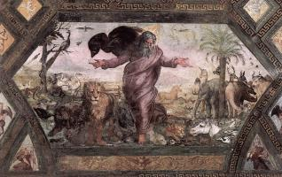
Creation of the World (7)
Creation of the World (7)
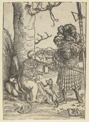
David (9)
David (9)
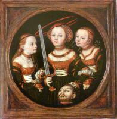
Judith (9)
Judith (9)
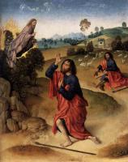
Moses (3)
Moses (3)

Noah (3)
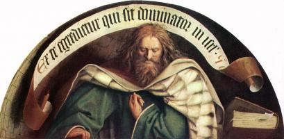
Prophets (30)
Prophets (30)
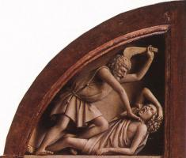
Scenes from the Old Testament (34)
Scenes from the Old Testament (34)
Virgin Mary
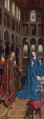
Annunciation (45)
Annunciation (45)
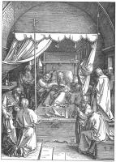
Assumption (16)
Assumption (16)
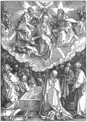
Coronation of the Virgin (13)
Coronation of the Virgin (13)
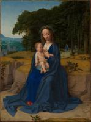
Flight into Egypt (25)
Flight into Egypt (25)
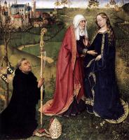
Scenes from the life of the Virgin (26)
Scenes from the life of the Virgin (26)
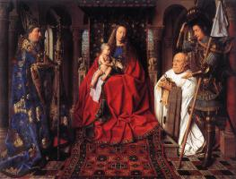
Virgin & Child (250)
Virgin & Child (250)
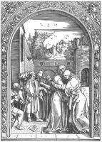
Virgin’s parents (10)
Virgin’s parents (10)
Jesus Christ
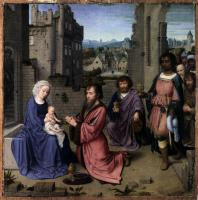
Adoration to Child (43)
Adoration to Child (43)
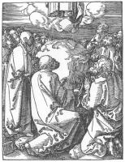
Ascension (4)
Ascension (4)
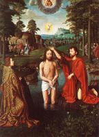
Baptism of Jesus (6)
Baptism of Jesus (6)
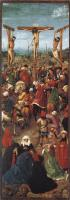
Crucifixion (70)
Crucifixion (70)
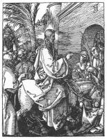
Entry into Jerusalem (3)
Entry into Jerusalem (3)
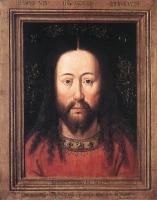
Jesus portrait (26)
Jesus portrait (26)
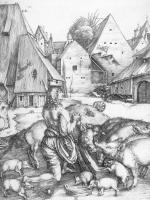
Jesus’ parables (7)
Jesus’ parables (7)
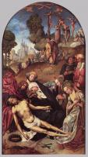
Lamentation over Christ (57)
Lamentation over Christ (57)
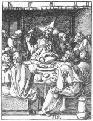
Last Supper (10)
Last Supper (10)
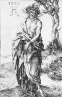
Man of Sorrows (12)
Man of Sorrows (12)
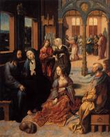
Ministry of Jesus (48)
Ministry of Jesus (48)
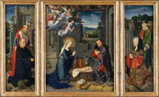
Nativity (25)
Nativity (25)
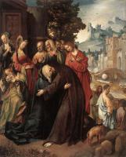
Passion of the Christ (110)
Passion of the Christ (110)
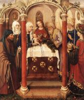
Presentation in the Temple (10)
Presentation in the Temple (10)
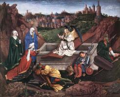
Resurrection (38)
Resurrection (38)
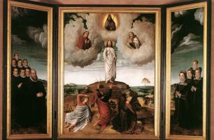
Transfiguration (4)
Transfiguration (4)
Christianity
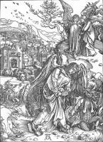
Apocalypse (25)
Apocalypse (25)
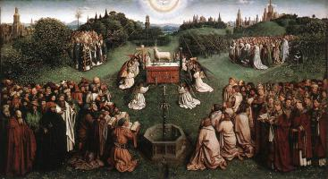
Church (43)
Church (43)
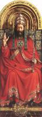
God the Father (4)
God the Father (4)
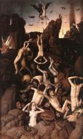
Hell (9)
Hell (9)
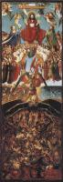
Last Judgment (14)
Last Judgment (14)
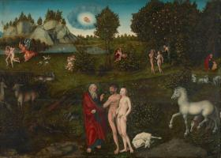
Paradise (6)
Paradise (6)
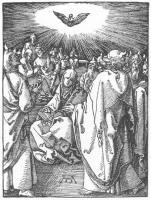
Pentecost (5)
Pentecost (5)
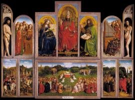
Scenes from the New Testament (32)
Scenes from the New Testament (32)
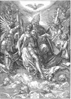
Trinity (10)
Trinity (10)
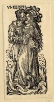
Vices (16)
Vices (16)
Saints

Apostle Paul (10)
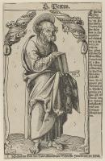
Apostle Peter (11)
Apostle Peter (11)
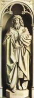
John the Baptist (19)
John the Baptist (19)
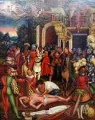
Martyrdom of saints (40)
Martyrdom of saints (40)

Mary Magdalene (13)
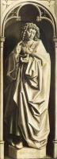
Saints (170)
Saints (170)

St Anthony (9)
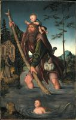
St Christopher (11)
St Christopher (11)
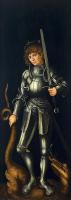
St George (12)
St George (12)
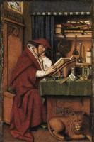
St Jerome (20)
St Jerome (20)

St Nicholas (6)
Artists
A
Pieter Aertsen (8)
Angelos Akotantos (16)
Albrecht Altdorfer (24)
Fra Angelico (145)
Ulrich Apt (2)
B
Derick Baegert (7)
Hans Baldung (26)
Jan de Beer (6)
Jehan Bellegambe (4)
Ambrosius Benson (16)
Willem Benson (3)
Hieronymus Bosch (44)
Hans Burgkmair (46)
C
Robert Campin (19)
Petrus Christus (17)
Joos van Cleve (38)
Colijn de Coter (10)
Michiel Coxie (13)
Lucas Cranach the Elder (239)
D
Jacques Daret (4)
Gerard David (43)
Duccio (80)
Albrecht Dürer (209)
E
Hubert van Eyck (1)
Jan van Eyck (39)
G
Giotto (162)
M
Michelangelo (36)
P
Georg Pencz (8)
R
Raphael (117)
Andreas Ritzos (9)